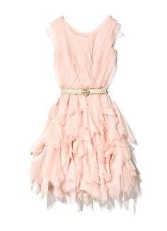
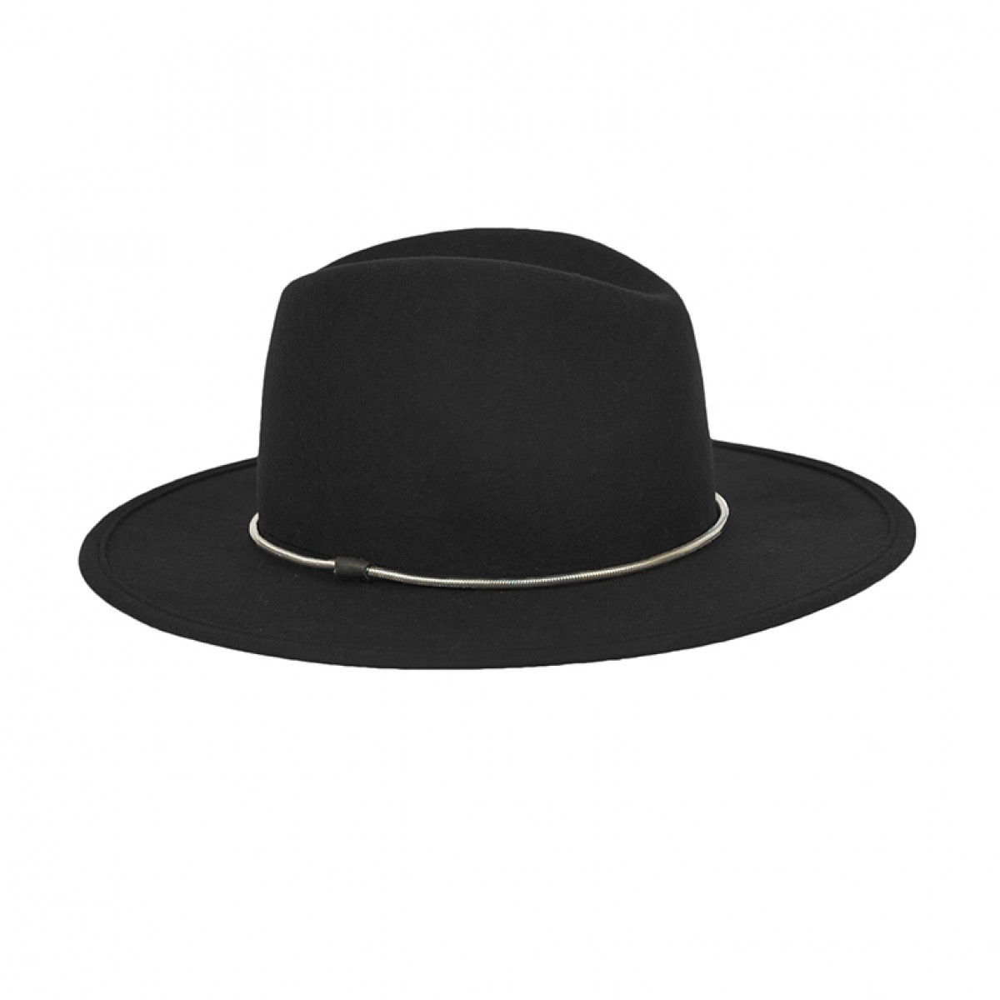
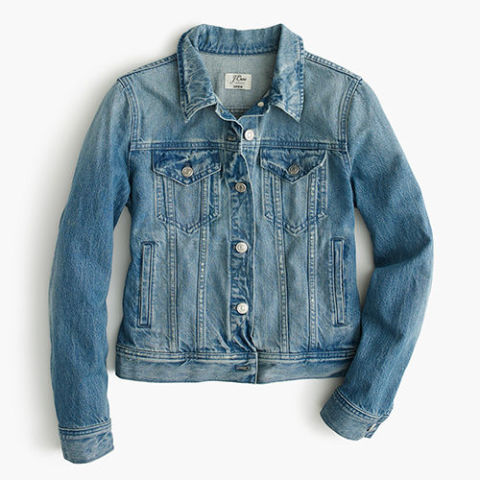
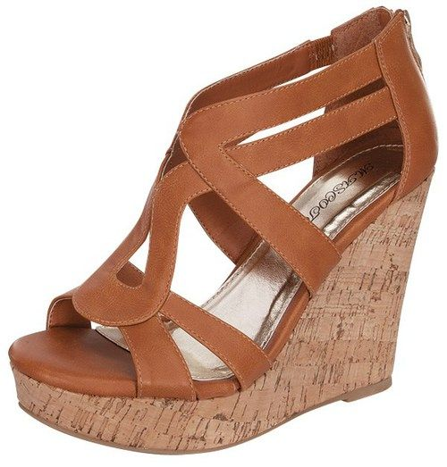
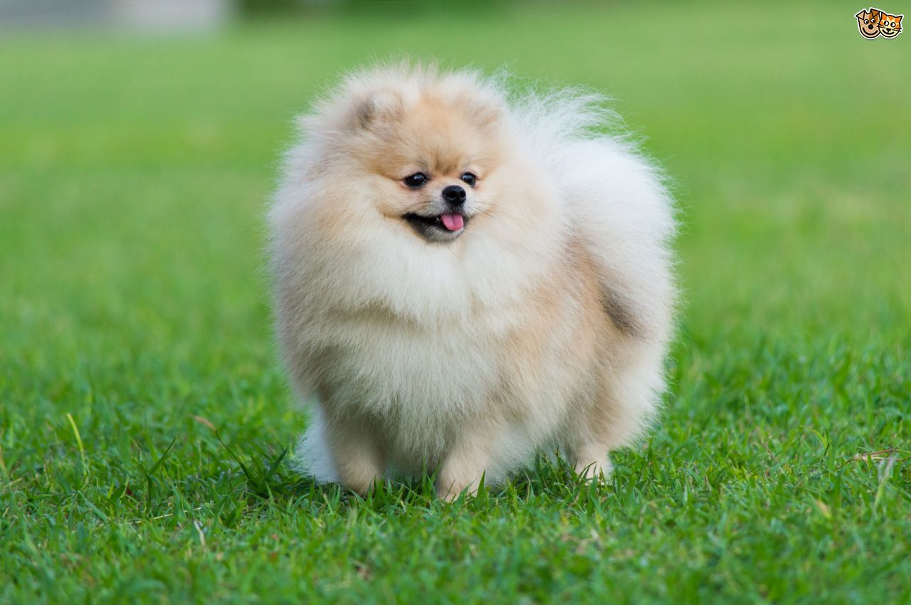

Outfit |
Description |
|---|---|
|  | This frilly pink dress highlights curves and toned arms while showing your fun side. Combined with a belt it typifies summer-time in the city. |
|  | A black felt hat adds a chic element to any outfit and neutralises the magnitude of pink dominating the outfit. |
|  | A denim jacket is a staple for any outfit and offers protection from any weather changes. A light denim would go best with the pink dress, giving a casual feel. |
|  | Wedges are an essential shoe and recommended for a long day of shopping on the Kings Road. They are comfortable yet stylish. These tan multi strap sandals show off your fresh pedicure while toning calves at the same time. |
|  | Lastly, a tiny dog, possibly a Pomeranian, whether on a leash or in a tote will complete this Chelsea look. |